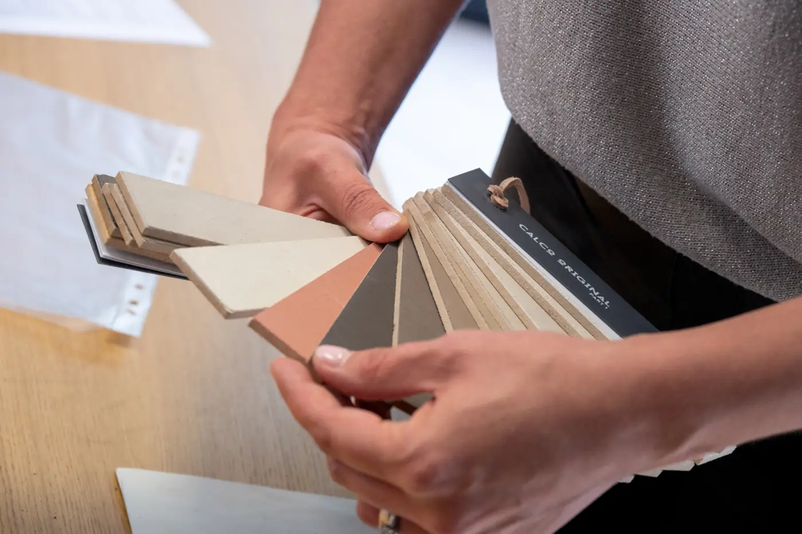
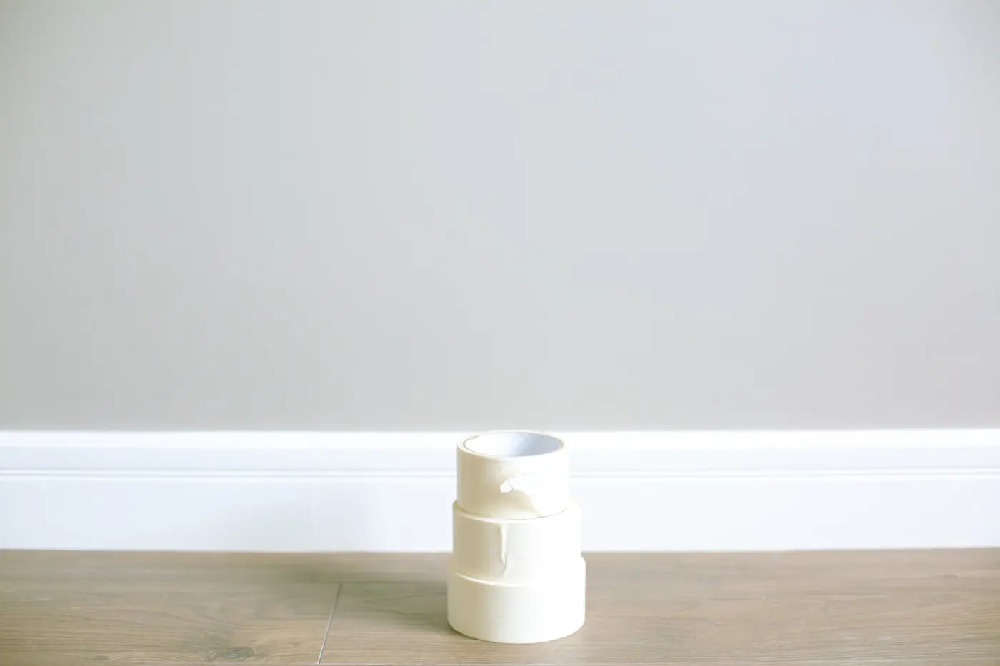
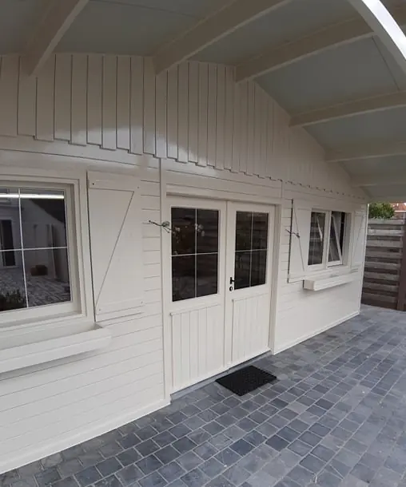

Welke kleur voor verf kiezen?
De kogel is door de kerk, jullie zijn van plan om jullie woning of een bepaalde ruimte te schilderen in een nieuw kleurtje. Jullie zijn toe aan iets anders of willen de kamer groter laten lijken. Welke kleur verf kies je dan best?


Kleurenpsychologie: een kleur voor elk gevoel
Elke kleur heeft een betekenins en kan een gevoel of gemoedstoestand opwekken. Wees je dus bewust van het doel van elke kamer of ruimte en gebruik de juiste kleuren in je voordeel. Zo is oranje bijvoorbeeld lustopwekkend en vrolijk, ideaal voor de keuken of woonkamer! Groen straalt dan weer kalmte en vruchtbaarheid uit, wat goed kan zijn voor een slaapkamer of badkamer. Moet je dan alleen met deze kleurenpsychologie rekening houden? Nee! Ook de opbouw van de ruimte, namelijk het volume van de ruimte en de hoeveelheid natuurlijk lichtinval kunnen een invloed hebben op je kleurkeuze
Kamer groter laten lijken met kleur
Het is een cliché dat je je kamer in lichte kleuren moet verven om ze groter te doen lijken, en dat klopt ook maar het is niet het enige trucje dat je kunt toepassen. Van deze drie extra kleurtips zijn wij alvast fan:
- Je kan een ruimte groter doen ogen door je muur tot 10 cm onder het plafond te schilderen in je gekozen kleur en het plafond en die strook van 10cm in het wit te verven. Het plafond lijkt zo hoger dankzij de extra witte rand en de kamer dus groter. Mooi in combinatie met diepe blauwgroentinten!
- Schilder je muren in dezelfde kleuren of gelijkaardige tinten als je gordijnen of meubels. Zo vormt de hele ruimte een mooi, egaal geheel en ziet deze er groter uit dan ze is.
- Creëer meer diepte en ruimte met een reeks kleurrijke schilderijen, fotokaders of andere decoratie.
Warme of donkere kleuren?
Kies je nu best voor warme of donkere kleuren? Ook daarvoor bestaat een handig regeltje: ligt de kamer in het noorden of oosten, dan komt daar niet veel natuurlijk licht binnen. Warme kleuren zoals oranje, rood, geel of roodbruin kunnen hier wonderen doen. Is de ruimte zuidgericht, dan kunnen koudere kleurtonen zoals blauw, groen of paars geschikt zijn.
Hoe kies je het juiste accentkleur?
Een accentmuur in de woonkamer of slaapkamer is in veel gevallen een leuk idee, maar de hele ruimte valt of staat dan met het gekozen kleur. Denk bovendien niet alleen goed na over de tint, maar ook over welke muur je tot accentmuur omdoopt. Wees je ervan bewust dat het accentkleur het focuspunt in de ruimte zal vormen. In de woonkamer kan dat bijvoorbeeld de schoorsteenmantel zijn, terwijl dat in de slaapkamer de muur aan het hoofdeinde of de muur naast het bed zal zijn. Een accentmuur in je bureauruimte kan zeker ook, maar kies dan niet de muur waarop je zit te kijken als je aan het werk bent.
Een goede accentkleur kiezen is niet zo eenvoudig en hangt ook erg van je persoonlijke smaak af. Wij adviseren om een lichtere kleur te kiezen naarmate de accentmuur groter wordt. Hoe kleinder de accentmuur, hoe opvallender de kleur mag zijn. Hou in elk geval ook rekening met de natuurlijke lichtinval. In eerder donkere ruimtes kies je beter voor een lichtere accentkleur, anders lijkt de kamer nog donkerder doordat er weinig natuurlijk licht is.
De juiste kleur bepaalt mee de sfeer, uitstraling en beleving van een ruimte. Daarom kijken we niet alleen naar kleurstalen, maar ook naar lichtinval, materialen en de functie van de ruimte. Tijdens een vrijblijvend plaatsbezoek adviseren we u graag over kleuren en afwerkingen die perfect aansluiten bij uw interieur. Ontdek meer over onze binnenschilderwerken.
Lees ook

Binnen- en buitendeuren schilderen in 5 stappen
Binnen- en buitendeuren dragen veel bij aan het globale uitzicht van je woning. Af en toe kunnen ze dan ook een nieuwe…
Lees meer
5 tips om afplaktape te gebruiken
Schilderen betekent vaak ook mooie lijnen creëren en daarvoor heb je afplaktape of schilderstape nodig. Omdat er zoveel…
Lees meer
Heeft je tuinhuis nood aan een stevige lik verf?
Kan je houten tuinhuis een nieuwe lik verf gebruiken? We vertellen je hoe je hout voorbereidt op schilderwerken en hoe…
Lees meerEen mooi resultaat begint met een goed gesprek.
Tijdens een vrijblijvend plaatsbezoek luisteren we naar uw wensen, geven we professioneel advies en bekijken we samen de mogelijkheden voor uw schilderwerken of interieurafwerking.